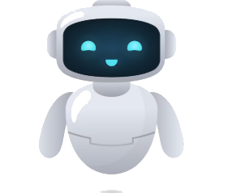
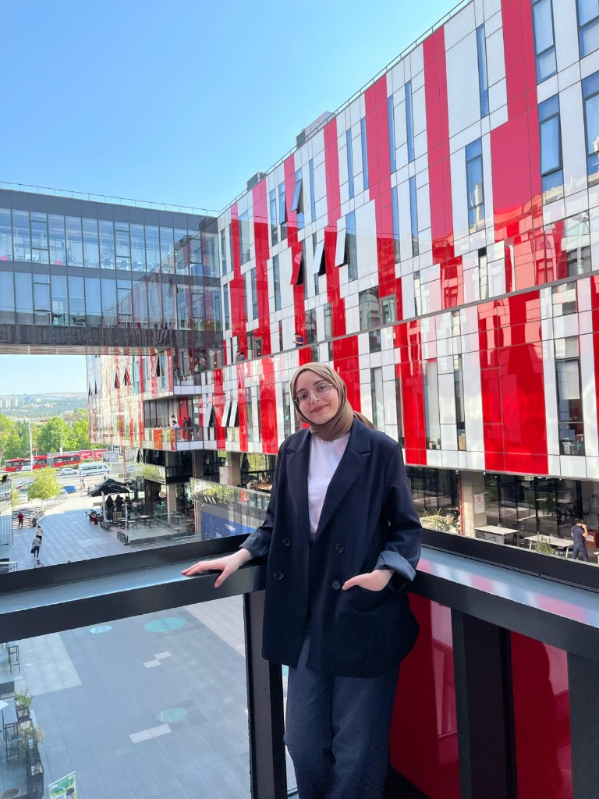

Web/Mobil Geliştirme & Yapay Zeka
Projelerimi Gör
Backend sistemler, otomasyon teknolojileri ve yapay zekâ destekli web/mobil uygulamalar üzerine çalışan üçüncü sınıf bilgisayar mühendisliği öğrencisiyim. Takım projelerinde aktif rol alarak güvenli, ölçeklenebilir ve kullanıcı odaklı yazılım çözümleri geliştirmeye odaklanıyorum.
Dijital delillerin bütünlüğünü doğrulamak ve chain-of-custody süreçlerini yönetmek için mikroservis tabanlı bir adli bilişim platformu geliştirildi. Evidence ingestion, hash verification ve immutable ledger akışlarının geliştirilmesinde görev aldım.
GitHub repository'lerindeki kod değişikliklerini otomatik algılayarak build, test ve pipeline süreçlerini yöneten bir CI otomasyon sistemi geliştirildi. Runner modülünün step execution ve log toplama mekanizmaları kısımlarında görev aldım.
LLM tabanlı sistemlerde kişisel veri sızıntısı ve etik ihlalleri önlemek amacıyla PII detection, ethics analysis ve decision engine modüllerinden oluşan çok katmanlı bir güvenlik gateway geliştirildi. Ethics analysis ve decision engine kısımlarında görev aldım.
Trafik kazası verileri (200k+ kayıt) üzerinde veri ön işleme, feature engineering ve makine öğrenmesi teknikleri kullanarak kaza şiddeti tahmini yapan bir model geliştirildi ve sonuçları kullanıcıya sunan bir analiz dashboard'u oluşturuldu.
Rol tabanlı kullanıcı yönetimi (Admin/İşveren/Aday), iş ilanı oluşturma ve başvuru sistemi, CV yönetimi ve profil oluşturma özelliklerini içeren bir web uygulaması geliştirdim.
Yapay zekâ destekli bir sunum analiz platformu geliştirerek video ve ses verileri üzerinden beden dili, göz teması, ses tonu ve konuşma akıcılığı analizleri gerçekleştiren bir web uygulaması tasarladım.
Öğrencilerin ders programlarını yönetebildiği, etkinlikleri takip edebildiği ve kampüs yaşamına dair bilgilere erişebildiği mobil uygulama geliştirildi. “Ders Yönetimi” modülünü geliştirme kısmında görev aldım.
ODTÜ Teknokent'te kullanıcı yönetimi, iş başvuru ilişkileri ve yönetici paneli modülleri geliştirdim.
Kurumsal iletişim ve organizasyon süreçlerinde aktif rol aldım.
Afiş ve video tasarımı ile reklamcılık alanlarında çalıştım. Kuruluşların görünürlüğünü artırmak için yaratıcı içerikler ürettim.
AGNO: 3.35
Diploma Notu: 95.4
Benimle iletişime geçmek için aşağıdaki bağlantıları kullanabilirsiniz.